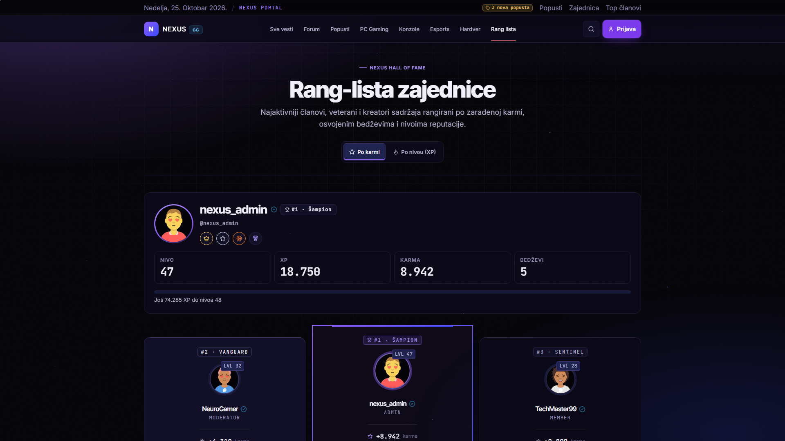
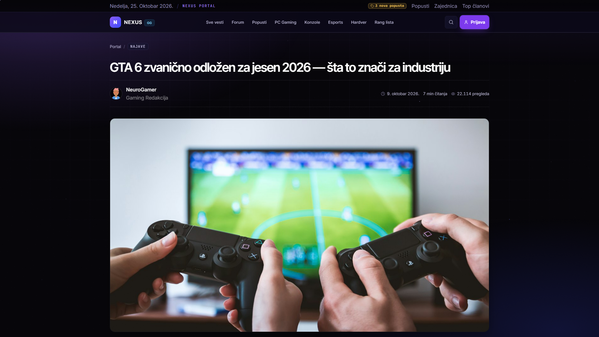
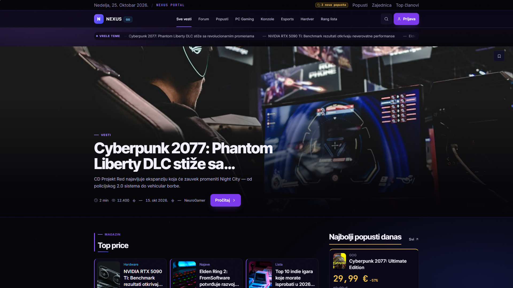

N
NEXUS · dizajn sistem
GAMING PORTAL & FORUM
OBSIDIAN
VIOLET
Novi vizuelni identitet za NEXUS: crna baza, teget dubina i ljubičasta kao jedina boja akcije - sa sitnim, tihim animacijama u pozadini.
crna · #050408
teget · #171A38
ljubičasta · #8B5CF6
1920 × 1080 snimci
01 - analiza postojećeg stanja
1.Šta NEXUS sada jeste
Analiza je rađena na stvarnom kodu (src/styles/tokens.css, src/styles/components/*.css, src/pages/*.tsx, src/components/**) i na snimcima ekrana 1920×1080 iz docs/dizajn-3.0/ (svih 6 strana je u prilogu, u punoj rezoluciji). Snimci su napravljeni sa pravim podacima - in-memory API + seed - ne sa praznim skeletonima.
37
stranica i ruta (portal, forum, popusti, profil, admin, auth)
1
izvor boja - tokens.css; ostalo sme samo var(--color-*)
1920×1080
rezolucija svih snimaka u ovom dokumentu
1.1 Trenutna paleta ("Neon Editorial" 3.0.0)
#0d0a1a
#15112b
#1e1940
#2a2354
#362c6b
#8b5cf6
#22d3ee
#fbbf24
#34d399
#fb7185
Površine su topli tamno-indigo tonovi (ne crni), a akcenata ima pet - svaki sa svojom zonom.
| Sloj | Nalaz | Ocena |
|---|
| Pozadina | Tamno-indigo #0d0a1a + tri radijalna sloja (violet, cyan, amber) i 5% mreža. Dubina postoji, ali baza nije crna kako brend traži - deluje ljubičasto-sivo. | Delimično |
| Površine | 5 stepeni iste porodice; kartica i pozadina su vrlo blizu, pa se granice čitaju samo po 1px ivici. | Delimično |
| Akcenti | Violet (akcija), cyan (forum), amber (popusti), emerald (zajednica), rose (opasno). Pravilo "jedna akcija po ekranu" se poštuje. | Dobro |
| Teget | U paleti ga praktično nema - najbliže je #2a2354, ali to je ljubičasti, ne plavo-teget ton. | Nedostaje |
| Animacije | Samo ticker i hover transformi. Pozadina je statična: mreža + grain, bez kretanja. Traženi "živ" osećaj crne baze ne postoji. | Nedostaje |
| Tipografija | Inter Tight (naslovi) + Inter (tekst) + JetBrains Mono (cene/brojevi). Skala je definisana i strogo poštovana. | Dobro |
1.2 Snimak 1920×1080 - početna
localhost:5199/ · 1920×1080

Slika 1 - Početna: hero pojas, "Top priče", "Forum u fokusu" i rail sa popustima.
01 - analiza (nastavak)
Strana po strana: gde dizajn radi, a gde ne
Isti snimci 1920×1080 primenjeni na ostale ekrane pokazuju gde hijerarhija radi, a gde se boje i površine stapaju.
/forum

Slika 2 - Forum: dobra hijerarhija, ali kategorije i teme dele skoro istu površinu.
/deals

Slika 3 - Popusti: najtoplija strana portala (amber cena), ali kartice su iste težine kao vesti.
/leaderboard

Slika 4 - Rang lista: bez "svečanosti" - top 3 se ne izdvaja dovoljno.
Slika 5 - Prijava: čista forma, ali prvi utisak nema boju brenda.
/article/gta-6-odlozeno-na-jesen-2026

Slika 6 - Članak: najbolji deo sistema; tekst ima ritam, ali hero i telo koriste istu sivo-ljubičastu bazu.
1.3 Nalaz po stranici
| Strana | Problem | Rešenje u 3.0 |
|---|
| Početna | Hero, kartice i lista su slične težine; sitni element (ticker) koristi isti violet kao CTA. | Hero na void crnoj, kartice na ink, tanka ljubičasta nit na sekcijama, ticker u tegetu. |
| Forum | Kategorije, teme i meta padaju na istu površinu; cyan se jedva vidi. | Kategorije u teget panelima; cyan ostaje samo za brojeve odgovora i live. |
| Popusti | Amber je dobar, ali cena nije dovoljno dominantna. | Cena mono 32px u amberu, kartica dobija amber gornju nit 2px. |
| Rang lista | Top 3 bez vizuelnog statusa. | Prestige ring (ljubičasto-royal) samo za #1; #2/#3 samo teget ivica. |
| Prijava | Forma bez brend konteksta. | Levi panel sa --gradient-brand (violet-royal) i logom. |
02 - nova paleta
2.OBSIDIAN VIOLET - crna, teget, ljubičasta
Tri boje brenda + dve statusne. Princip: crna je platno, teget je dubina, ljubičasta je akcija. Nijedna boja se ne koristi "dekorativno" - svaka nosi ulogu.
Pravilo broj 1
Jedna ljubičasta akcija po ekranu. Ako na ekranu postoje dva puna ljubičasta dugmeta, drugo mora postati ghost ili secondary. Teget nikad nije boja dugmeta - teget je površina.
2.1 Površine - crna baza, teget stepenice
Void Black#050408 / surface-0Crna baza aplikacije; na njoj se vide sitne animacije.
Obsidian#0B0917 / surface-1Body sloj: sekcije i "papir" portala.
Ink Violet#121026 / surface-2Default kartice, redovi foruma, paneli.
Navy Deep#171A38 / surface-3Hover kartice, input polja - prvi pravi teget.
Navy#1E2350 / surface-4Aktivno stanje, tab, chip, broj badge-a.
Navy Light#2A2E66 / surface-5Najsvetliji sloj - retko, za istaknute redove.
2.2 Akcenti: ljubičasta akcija, royal teget zona
Ultraviolet#8B5CF6 / primaryJedina primarna akcija, aktivni tab, akcentna nit.
Ultraviolet Light#A78BFA / primary-fgHover i ljubičasti tekst na crnom (7,2:1).
Violet 600#7C3AED / primary-surfacePuna površina CTA sa belim tekstom (5,7:1 - AA).
Violet 900#4C1D95 / primary-deepDubina: gradijent loga, senka, prigušeni obris.
Royal Navy#3B4BFF / navy-accentLinkovi, fokus, "info" - teget-plavi akcent brenda.
Teal Navy#38BDF8 / secondaryForum, PC, live/online. Nikad glavna akcija.
2.3 Statusne boje (izvan brenda, moraju ostati)
Signal Amber#F5C451 / dealCena, -%, "ističe danas". Tamni tekst na površini.
Signal Rose#FB7185 / dangerGreška, istekao deal, ban - nikad dekoracija.
Community Green#34D399 / success"Rešeno", verifikacija, online tačka.
2.4 Ivice - da kartice ne "plivaju" u crnom
Hairline#1C1930 / border-subtle1px ivica svake kartice.
Hairline +#262243 / border-defaultInputi, segmenti, razdelne linije.
Hairline ++#363060 / border-strongHover i aktivna kartica.
2.5 Tekst i kontrast - izmereno, ne procenjeno
Kontrast ispod je izračunat iz hex vrednosti po WCAG 2.1 relaciji luminanse. Cilj: telo teksta najmanje 4,5:1, veliki naslovi 3:1.
| Par (tekst / podloga) | Odnos | AA | Gde se koristi |
|---|
| Paper #F1EFFA / surface-1 #0B0917 | 17,33:1 | prolazi | Telo teksta, naslovi kartica |
| Mist #B6B2D0 / surface-1 | 9,64:1 | prolazi | Excerpt, datum, vreme čitanja |
| Ash #918CB4 / surface-2 #121026 | 5,86:1 | prolazi | Eyebrow, labele filtera, naziv prodavnice |
| Violet Light #A78BFA / surface-1 | 7,24:1 | prolazi | Hover naslova, aktivni link, ikone |
| Teal #38BDF8 / surface-1 | 9,20:1 | prolazi | Broj odgovora, live, forum ikone |
| Amber #F5C451 / surface-1 | 12,10:1 | prolazi | Cena i -% popusta |
| Beli tekst / CTA #7C3AED | 5,70:1 | prolazi | Primarno dugme "Pročitaj" |
| Tamni #1A1203 / amber #F5C451 | 11,40:1 | prolazi | -64% pilula, "ističe danas" |
| Rose #FB7185 / surface-1 | 7,32:1 | prolazi | Greške, istekao deal |
| Dust #7B7699 / surface-1 | 4,32:1 | granično | Samo placeholder i disabled - nikad telo teksta |
2.6 Tokeni teksta, ivica i fokusa
| Token | Hex | Uloga |
|---|
| text-primary | #F1EFFA | Naslovi i telo teksta (17,3:1 na surface-1) |
| text-secondary | #B6B2D0 | Excerpt, meta red, opisi (9,6:1) |
| text-tertiary | #918CB4 | Eyebrow, labele, store (5,9:1 na surface-2) |
| text-muted | #7B7699 | Placeholder / disabled - nikad telo teksta |
| border-focus | #A78BFA | Jedan fokus stil: 2px + 2px offset za sve elemente |
2.7 Zašto baš ove boje: tri nivoa čitanja
Trijada crna / teget / ljubičasta radi kada svaka boja ima vlastiti posao. Ako se pomešaju, ekran ponovo postaje "sivo-ljubičast", kao u 3.0.0 paleti. Zato je uloga fiksna:
- Crna (#050408) - tišina. 70-80% površine ekrana. Nosi prazan prostor, animacije i fotografije.
- Teget (#171A38 - #2A2E66) - struktura. Iznad crne, ali ispod akcije. Nosi "kutije": kartice, redove, panele, inpute. Plavi podton razdvaja teget od ljubičaste, pa oko odmah vidi šta je interfejs, a šta je akcija.
- Ljubičasta (#8B5CF6) - akcija. Najmanja površina na ekranu (do 10%), najveća težina. Samo ono što vodi napred: CTA, aktivni tab, naslov-hover, akcentna nit.
Statusne boje (amber, rose, zelena) dolaze izvan brenda jer nose značenje koje korisnik ne sme da uči iznova. One se ne šire - amber je samo kod cene i popusta, rose samo kod greške.
2.8 Šta se konkretno menja na ekranu
| Element | Sada (3.0.0) | 3.0 OBSIDIAN | Efekat |
|---|
| Pozadina strane | #0d0a1a, tri sjaja | #050408, dva sjaja + čestice | Ekran postaje pravo crn; sadržaj "iskače" napred, animacije se vide. |
| Kartica vesti | #15112b, siva ivica | #121026, ivica #1C1930 | Kartica se odvaja od baze bez senke i bez svetlije sive. |
| Hover reda | #1e1940 (ljubičast) | #171A38 (teget) | Hover deluje "hladnije" i miri se sa ljubičastim akcentom. |
| Aktivni tab | violet + glow | #1E2350 + 2px violet nit | Stanje se vidi po obliku, ne samo po sjaju - bolje za slabiji vid. |
| Cena u popustima | amber 28px | amber 32px, mono, tabularno | Cena je najjači element kartice, kao u realnoj prodavnici. |
Mali test pre primene
Smanji snimak ekrana na 30% i zažmiri: ako vidiš jednu ljubičastu tačku po ekranu - paleta radi. Ako vidiš više njih, negde je ljubičasta postala dekoracija i tu treba teget.
2.9 Primena po ekranu - gde je koja boja
| Ekran | Baza | Gde je akcija, gde je zona |
|---|
| Početna | #050408 + teget kartice | Hero naslov na crnom, "Pročitaj" ljubičasto; kartice ink sa 2px ljubičastom niti; forum sekcija u teget panelu; cene u amberu. |
| Forum | #0B0917 | Kategorije u teget panelima (#171A38), broj odgovora cyan; ljubičasto samo za "Nova tema". |
| Popusti | #050408 | Kartice na ink sloju; cena 32px amber sa tamnim tekstom; aktivni filter tab #1E2350 (ne ljubičast). |
| Članak | #0B0917 | Tekst na mirnom sloju (bez čestica iza teksta); meta u tegetu; "Sačuvaj" ghost dugme. |
| Rang lista | #050408 | #1 dobija prestige ring (#8B5CF6 - #3B4BFF), #2/#3 samo teget okvir - status bez dodatnih boja. |
| Prijava | #050408 | Levi panel sa brand gradijentom i česticama; forma na ink sloju; ljubičasto dugme "Prijavi se". |
| Profil | #0B0917 | XP traka ljubičasta (napredak = akcija), nivo chip teget, brand boje platformi ostaju autentične. |
| Admin | #0B0917 | Tabele neutralne; upozorenja amber, opasne akcije rose; ljubičasto samo za primarno "Sačuvaj". |
2.10 Svetla tema (light) - ista struktura, plavi teget
Portal ima i svetli režim (data-theme="light"). Paleta ostaje prepoznatljiva: površine su hladno-beli slojevi sa ljubičastim podtonom, teget postaje srednji ton, a ljubičasta tamnija da bi tekst ostao čitljiv.
Paper White#FBF9FF / surface-0Pozadina svetle teme.
White#FFFFFF / surface-1Kartice na svetlom.
Lilac Mist#EFEBFA / surface-2Hover i unutrašnjost na svetlom.
Violet 700#6D28D9 / primaryAkcija u svetloj temi (6,4:1 sa belim).
Navy Text#1E2350 / text-primaryTelo teksta na belom (14,2:1).
Amber Deep#B45309 / dealCena na svetlom (4,7:1).
Ukupno: 9 površina + 6 akcenata + 3 statusa + 4 tekst + 4 ivice tokena - dovoljno za ceo portal, a svaki token ima tačno jednu ulogu. Sve vrednosti su popisane u scripts/design/palette.mjs, pa se primena svodi na prepis u tokens.css i theme.css.
3.Crna baza koja "diše"
Cilj nije efekat, nego život: pozadina se jedva kreće - dovoljno da ekran ne izgleda kao statična slika, a da tekst ostane miran za čitanje. Sve animacije su ispod sadržaja i isključuju se na prefers-reduced-motion.
3.1 Pet slojeva pozadine (od najnižeg ka sadržaju)
L1 - Void baza. Ravna #050408. Bez nje sve ostalo izgleda prljavo.
L2 - Dva ambijentalna sjaja. Ljubičasti gore-lijevo, teget dole-desno. Animacija ambient-drift 26 s: pomeranje do 4%, skala do 1.06, opacity 0,8-1.
L3 - Mreža 64px. Statična, maskirana radijalno - vidi se samo u centru, nestaje ka ivicama. Daje "inženjerski" karakter bez buke.
L4 - Čestice (zvezde). 18 tačaka, 1-2px, ljubičasto-teget nijanse. Animacija particle-drift: lebde nagore 40-90 s, opacity 0,2-0,7. Jedini pokretni sloj.
L5 - Sken linija + grain. 1px linija prelazi ekran za 14 s (gore-dole). Film grain statičan, 3% - daje "taktilnost" slici.
3.2 CSS (bez JS-a, bez novih zavisnosti)
/* src/styles/base.css - svi slojevi ispod sadržaja, z-index: 0 */
body::before { /* L2 - ambijent koji "diše" */
content: ""; position: fixed; inset: -10%; z-index: 0; pointer-events: none;
background:
radial-gradient(ellipse 60% 50% at 14% 10%, var(--color-depth-violet), transparent 62%),
radial-gradient(ellipse 55% 45% at 86% 90%, var(--color-depth-navy), transparent 62%);
animation: ambient-drift 26s ease-in-out infinite alternate;
}
body::after { /* L3 - mreža */
content: ""; position: fixed; inset: 0; z-index: 0; pointer-events: none;
background-image: linear-gradient(var(--grid-line) 1px, transparent 1px),
linear-gradient(90deg, var(--grid-line) 1px, transparent 1px);
background-size: 64px 64px;
mask-image: radial-gradient(ellipse 70% 60% at 50% 40%, #000, transparent 85%);
}
@keyframes ambient-drift {
from { transform: translate3d(0,0,0) scale(1); opacity: .8; }
to { transform: translate3d(2%, -1.5%, 0) scale(1.06); opacity: 1; }
}
@keyframes particle-drift {
from { transform: translate3d(0, 0, 0); opacity: .2; }
50% { opacity: .7; }
to { transform: translate3d(6px, -120px, 0); opacity: .2; }
}
@keyframes scan {
from { transform: translate3d(0, -20vh, 0); }
to { transform: translate3d(0, 120vh, 0); }
}
@media (prefers-reduced-motion: reduce) {
body::before, .nx-particles, .nx-scan { animation: none !important; }
}
3.3 Čestice - komponenta i JSX
// src/components/AmbientBackdrop.tsx (novo, ~40 linija)
<div className="nx-particles" aria-hidden="true">
{Array.from({ length: 18 }, (_, i) => (
<i key={i} style={{
left: `${(i * 37) % 100}%`,
top: `${(i * 53) % 100}%`,
animationDuration: `${40 + (i % 7) * 8}s`,
animationDelay: `${-(i * 3.1)}s`,
}} />
))}
</div>
Pravila da animacija ne smeta
- Nikad
top/left/width - samo transform i opacity (GPU, bez layouta).
- Najviše 3 animirana sloja; od toga samo jedan "putuje" (čestice).
prefers-reduced-motion isključuje sve - obavezno.- Kontrast teksta se proverava preko animacije - najsvetlija tačka pozadine ne sme da obori AA.
Gde se animacija vidi
- Hero i sekcije sa puno praznog prostora (početna, auth, 404).
- Iza naslova sekcija - ne ispod teksta članka (dugo čitanje).
- Forum i popusti: samo ambient + mreža, bez čestica (gust sadržaj).
- Mobilni: bez čestica, ostaje samo ambient (baterija).
03 - primena (stanje posle)
Snimci posle primene 3.0 — OBSIDIAN VIOLET
Isti ekrani, isti podaci, isti raspored — promenjena je svetlost: crna baza, teget struktura i ljubičasta akcija. Snimci su napravljeni posle F1-F5, skriptom npm run shot:design (1920×1080, tamna tema, nula grešaka u konzoli).
/ · 1920×1080

Početna: hero na void crnom, kartice ink sa ljubičastom niti, cene u amberu.
Forum: kategorije u teget panelima, cyan samo za status i brojeve.
Popusti: cena 32px amber mono, kartica sa amber gornjom niti, aktivni tab teget.
/leaderboard

Rang lista: prestige prsten samo za #1, #2/#3 samo teget ivica.
/article/gta-6-odlozeno-na-jesen-2026

Članak: miran ink sloj za telo, meta u tegetu, „Sačuvaj“ ghost.
/login

Prijava: levi brand panel violet → royal, forma na ink sloju.
Verifikacija
npm run verify prolazi ceo lanac (lint, testovi, tokeni, OG, ikonice, build, prerender). Snimci su u docs/dizajn-3.0/ (analiza 3.0.0) i docs/dizajn-3.0/posle/ (stanje posle 3.0).
4.Kako se 3.0 uvodi u kod
Paleta je već pripremljena kao tokeni - primena je prepis vrednosti i nekoliko nijansi u komponentama. Nema novih biblioteka i nema preuređivanja layouta.
4.1 Tokeni - src/styles/tokens.css
@theme {
/* Površine: crna -> teget */
--color-surface-0: #050408; /* Void */
--color-surface-1: #0B0917; /* Obsidian */
--color-surface-2: #121026; /* Ink Violet */
--color-surface-3: #171A38; /* Navy Deep */
--color-surface-4: #1E2350; /* Navy */
--color-surface-5: #2A2E66; /* Navy Light */
/* Brend */
--color-primary: #8B5CF6;
--color-primary-hover: #A78BFA;
--color-primary-surface: #7C3AED;
--color-primary-fg: #A78BFA;
--color-primary-deep: #4C1D95;
--color-navy-accent: #3B4BFF;
--color-secondary: #38BDF8;
/* Tekst + ivice */
--color-text-primary: #F1EFFA;
--color-text-secondary: #B6B2D0;
--color-text-tertiary: #918CB4;
--color-text-muted: #7B7699;
--color-border-subtle: #1C1930;
--color-border-default: #262243;
--color-border-strong: #363060;
/* Ambient (animacije) */
--color-depth-violet: rgba(139, 92, 246, 0.24);
--color-depth-navy: rgba(59, 75, 255, 0.18);
--grid-line: rgba(167, 139, 250, 0.055);
--gradient-brand: linear-gradient(135deg, #8B5CF6 0%, #3B4BFF 100%);
}
4.2 Redosled rada (procena 8-12 h)
| Faza | Posao | Fajlovi | Vreme |
|---|
| F1 | Novi tokeni (crna, teget, tekst, ivice) + svetla tema sa plavim tegetom | tokens.css, theme.css | 1-2 h |
| F2 | Ambient sloj: sjajevi, mreža, grain; čestice + sken linija | base.css, AmbientBackdrop.tsx, Layout.tsx | 2 h |
| F3 | Hero i kartice: void/ink skala, ljubičasta nit sekcije, hover bez glow-a | theme.css, StoryCard.tsx, SectionHeader.tsx | 2 h |
| F4 | Forum (teget paneli, cyan samo status), popusti (amber cena 32px) | ForumPage.tsx, ThreadRow.tsx, DealCard.tsx, PriceTag.tsx | 2-3 h |
| F5 | Rang lista prestige, auth brand panel, Navbar logo sa --gradient-brand | LeaderboardBoard.tsx, AuthShell.tsx, Navbar.tsx | 2 h |
| F6 | Snimci 1920x1080 svih strana, korekcija kontrasta, npm run verify | scripts/design/capture-1920.mjs | 1 h |
Posle F1 + F2
Već se vidi 70% novog identiteta: crna baza sa tihim ljubičasto-teget sjajem i česticama. F3-F5 menjaju samo nijanse postojećih komponenti - nema preuređivanja layouta, zato je rizik mali.
4.3 Primer primene: kartica vesti pre i posle
/* src/styles/components/theme.css - .story-card-row */
/* PRE 3.0 */
background: #15112b; border: 1px solid rgba(255,255,255,.06);
/* POSLE 3.0 - OBSIDIAN VIOLET */
background: var(--color-surface-2); /* #121026 Ink */
border: 1px solid var(--color-border-subtle); /* #1C1930 Hairline */
border-left: 2px solid var(--color-primary); /* #8B5CF6 - akcentna nit */
/* hover */
background: var(--color-surface-3); /* #171A38 Navy Deep */
border-color: var(--color-border-strong); /* #363060 */
Isti obrazac važi za svaku karticu: crna baza, teget za interakciju, jedna ljubičasta nit koja označava "ovo je sadržaj koji se čita". Bez senke, bez glow-a, bez gradijenta - promena je u tri linije CSS-a po komponenti.
4.4 Verifikacija
npm run lint - TypeScript čist; npm run lint:css - nijedan hex van tokena.npm run test - server testovi; npm run verify - ceo lanac uključujući build i prerender.- Snimci 1920x1080 za 6 strana (početna, forum, popusti, rang lista, članak, prijava) -
node scripts/design/capture-1920.mjs.
- Tabela kontrasta iz 2.5 ostaje zelena; animacije isključene na
prefers-reduced-motion.
05 - prilog
Brzi pregled: do / ne raditi
Radi
- Crna baza
#050408, teget stepenice za sve površine.
- Ljubičasta samo za akciju, aktivni tab i nit sekcije.
- Cyan isključivo za status (online, live, broj odgovora).
- Tanke ivice
#1C1930 umesto senki.
- Animacije: transform + opacity, 3 sloja maksimum.
- Beli tekst na
#7C3AED, nikad na #8B5CF6.
Ne radi
- Ne koristi ljubičastu kao pozadinu velikih blokova - preuzima ekran.
- Ne stavljaj glow na kartice (samo CTA i aktivni tab).
- Ne dodaj nove boje van palete (svaka ide u
tokens.css).
- Ne animiraj
top/left/width - layout thrash.
- Ne uključuj čestice iza tela članka.
- Ne stavljaj dve pune ljubičaste akcije na isti ekran.
Prilozi uz ovaj dokument
| Fajl | Sadržaj |
|---|
01-pocetna-1920x1080.png | Početna - hero, top priče, forum, popusti (trenutno stanje) |
02-forum-1920x1080.png | Forum - kategorije i lista tema |
03-popusti-1920x1080.png | Popusti - amber zona, cene |
04-rang-lista-1920x1080.png | Rang lista - top 3 i tabela |
05-clanak-1920x1080.png | Članak - editorial layout |
06-prijava-1920x1080.png | Prijava - auth ekran |
snimci.json | Tehnički izveštaj snimaka (naslov, tema, fontovi, greške konzole) |
snimci-1920x1080.pdf | Svi snimci u jednom PDF-u (A4 po širini) |
scripts/design/palette.mjs | Izvorne vrednosti palete + izračun kontrasta |
posle/*-1920x1080.png | Isti ekrani posle primene 3.0 (sekcija 03) |
scripts/design/capture-1920.mjs | Skripta za snimke 1920x1080 |
Zaključak
NEXUS 3.0 ne menja strukturu - menja svetlost. Crna baza vraća kontrast, teget daje dubinu i odvaja interfejs od akcije, a ljubičasta ostaje jedina tačka na koju oko treba da klikne. Sitne animacije u pozadini (ambijent, mreža, čestice, sken linija) daju "živ" osećaj bez trošenja pažnje. Rezultat: portal koji izgleda kao igra, a čita se kao novina.